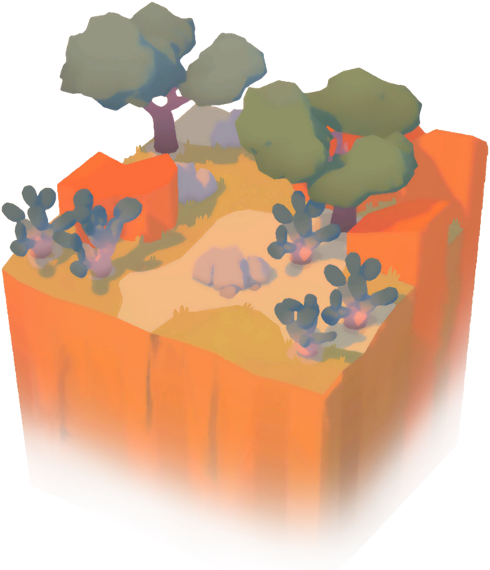
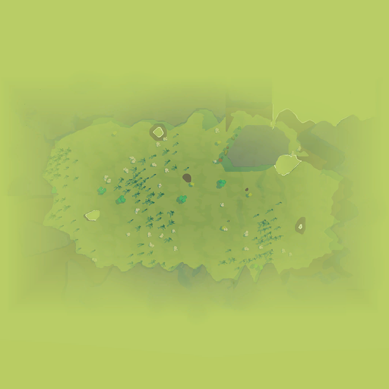
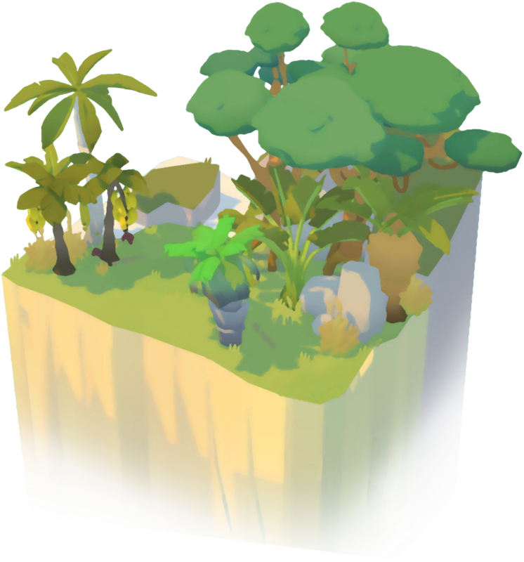

CATALOG
Biomes
Crops, resources, needs and hazards. Evergreen is the default comparison biome.
5 entries
| Biome | Crops & resources | Needs / hazards | Availability |
|---|---|---|---|
 Drylands | See scenario planting lists | Thirst / hydration | Unknown |
 Evergreen Evergreen | See scenario planting lists | Default / baseline | Unknown |
 Spookylands | See scenario planting lists | Not established | Unknown |
 Tropiclands | See scenario planting lists | Cooling / high temperatures | Unknown |
 Winterlands Winterlands | See scenario planting lists | Heat / cold | Unknown |